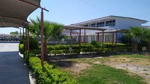

Bienvenido al portal informativo digital del ciclo escolar 2026. Este sitio web surge como un proyecto integral académico con el objetivo de recolectar, organizar y presentar de manera estructurada la información esencial de las diversas materias que integran nuestro plan de estudios.
A través de las diferentes secciones del menú superior, usted podrá navegar por los contenidos de Administración, Conciencia Histórica, Comunicación, Psicología y Organismos, cada uno con sus respectivos objetivos y progresiones de aprendizaje.
